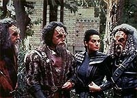
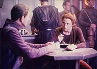
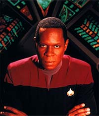
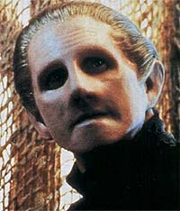
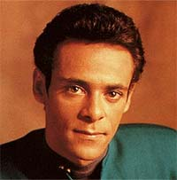
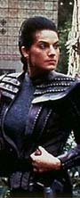
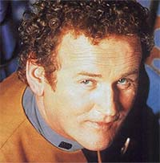
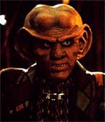
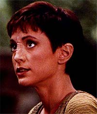

|
Avaliao
geral
Ainda que fortemente ligada
primeira temporada, devido estabilidade da equipe de
roteiristas, esta segunda temporada bastante superior
antecessora, seja na mdia de notas, seja na frao de episdios
vencedores (com trs ou mais estrelas), com "16/26"
(versus "12/20"), ou mesmo na frao de episdios
excelentes (com 3,5 ou 4 estrelas), com "12/26", versus
"4/20" da temporada anterior (vale salientar que somente
a stima temporada tem uma frao to grande de episdios
excelentes).
A qualidade no se manteve consistente ao longo da temporada. A
temporada comeou muito bem, no rastro dos dois ltimos episdios
do ano anterior ("Duet"
e "In
The Hands Of The Prophets"), com a "Trilogia do
Crculo", seguida por um segmento fraco e um forte ("Invasive
Procedures" e "Cardassians",
respectivamente). A chegamos no momento mais crtico da
temporada, quando, antes do clssico "Necessary
Evil", tivemos dois episdios fracos e, aps mais
quatro, uma verdadeira "trilogia do terror", formada por
"Second
Sight", "Sanctuary"
e "Rivals".
Retomando em "Armageddon
Game", seguimos com a "montanha russa de
qualidade" (to comum em sries de Jornada), at
darmos de cara com os desconexos e desconjuntados "Playing
God" e "Profit
and Loss". Felizmente a seqncia final de oito
episdios "vencedores" (uma das mais fortes da histria
de Jornada) nos faz recuperar a confiana na srie e nos
estimula a esperar a prxima temporada.
Cabe observar que dentre os dez episdios que receberam duas
estrelas ou menos, apenas "Rules
of Acquisition" e "Paradise"
(at certo ponto) podem ser considerados produtos bem acabados,
ainda que cheios de problemas (o primeiro com um humor duvidoso e
uma histria tola e o segundo com problemas com a escalao da
antagonista, falta de foco e algumas convenincias).
Os outros oito "perdedores" apresentam problemas de
produo de tal monta e so to "zoneados" que
chegam a ser ridculos. Citando alguns problemas claros (que
ocorrem normalmente em uma produo de TV, mas aqui atingem tais
nveis de obviedade que beiram a comdia involuntria), temos:
rescritas at a morte (em todos eles), cenas escritas obviamente
como tapa-buraco --devido ao episdio filmado estar ficando curto
(onde "Sanctuary"
um bvio exemplo, onde as cenas em que o tradutor universal no
funciona foram acrescidas somente para retardar a "revelao"
de que Bajor a terra prometida dos Skreeans), histrias
independentes coladas de qualquer jeito para pr mais um episdio
em produo (com quando a sub-trama de "Melora"
colide com a trama principal ao seu final no Explorador), dbeis
tramas Sci-Fi, inseridas quase que arbitrariamente para satisfazer
alguma espcie de quota (o "protouniverso" de "Playing
God" e a sub-trama de filme "B" de "The
Alternate", por exemplo) e absurdas convenincias de
trama para fazer o episdio funcionar em seus termos
(especialmente "Invasive
Procedures", com a necessria "estupidificao"
de Odo).
(Esforo tem de ser --e foi-- despendido no sentido de reduzir
tais ocorrncias no decorrer da srie. Isto muito grave pois
uma coisa um episdio ser ruim devido a um roteiro infeliz e
ser produzido de acordo, outra coisa ele ser um "paciente
de esquizofrenia mltipla com mais remendos que uma mmia",
como ocorreu de forma muito freqente neste temporada.)
A grande virtude da temporada se aproveitar do fato de que os
personagens j estavam estabelecidos, mas ainda o suficiente
novos para receberem uma dose macia de caracterizao. Outro
fator importante foi estabelecer temas adicionais alm daqueles
da primeira temporada, envolvendo os Bajorianos, Cardassianos e
federados, suas disputas internas e entre si.

Inmeros problemas de caracterizao ou foram minimizados ou
mesmo completamente resolvidos. A temporada foi um momento de
estabelecer e (ou) consolidar pares cuja interao sempre
produziria efeitos satisfatrios at o final da srie, tais
como: Ben & Jake (ao longo da temporada), Sisko & Dax (ao
longo da temporada e especialmente em "Playing
God" e "Blood
Oath"), Kira & Odo (ao longo da temporada, mas
definitivamente em "Necessary
Evil"), Bashir & Garak ("Cardassians"
e "The
Wire") e Bashir & O'Brien ("Armageddon
Game"). A interao de Sisko com Dukat (por exemplo
em "The
Maquis") tambm foi muito importante para o
personagem, aqui e ao longo da srie.
Novos temas so introduzidos com a adio dos Maquis (no duplo "The
Maquis") e do, sugerido por toda a temporada,
Dominion (em "The
Jem'Hadar"), os quais marcariam definitivamente a srie
(o Dominion, em particular, at o ltimo episdio). Tambm so
inauguradas as sries de episdios em que o "chefe O'Brien
torturado" (com "Armageddon
Game", "Whispers"
e "Tribunal")
e em que ocorrem aventuras no "universo do Espelho" (com
"Crossover").
Certas piadas, que se tornariam recorrentes ao longo da srie,
tambm se destacam, como a do Morn (agora com referncias mais
diretas nos roteiros), o "falastro que s fala fora de
cena", ou do "infame capito Bodai", um Galamite
de crnio transparente e ex-amante de Jadzia.
Algumas caractersticas, sugeridas na primeira temporada, que se
consolidaram aqui na segunda (temporada fundamental para o
estabelecimento da personalidade da srie), acompanhariam o
programa at o seu final (o que pode ajudar alguns dos leitores a
entender por que DS9 no a sua srie favorita):
 DS9
uma srie muito mais orientada a personagem do que qualquer
outra srie de Jornada, so fundamentais para a srie a
caracterizao e o desenvolvimento dos personagens. As tramas so
em sua maioria bastante simples --em essncia colocar os
personagens em uma situao difcil (um dilema) e ver como eles
reagem dentro de suas caracterizaes. A srie parece ter uma
capacidade de produzir bons dilogos e oferecer insights sobre os
personagens mesmo em situaes em que a trama de um dado episdio
no consegue ser nem um pouco original ou interessante. DS9
uma srie muito mais orientada a personagem do que qualquer
outra srie de Jornada, so fundamentais para a srie a
caracterizao e o desenvolvimento dos personagens. As tramas so
em sua maioria bastante simples --em essncia colocar os
personagens em uma situao difcil (um dilema) e ver como eles
reagem dentro de suas caracterizaes. A srie parece ter uma
capacidade de produzir bons dilogos e oferecer insights sobre os
personagens mesmo em situaes em que a trama de um dado episdio
no consegue ser nem um pouco original ou interessante.
DS9
uma srie totalmente orientada a elenco, Sisko (apesar de
Avery Brooks ter destaque nos crditos de abertura) no merece
tratamento privilegiado nos roteiros, ele mais um personagem a
ser desenvolvido. O que diferente das outras sries de Jornada,
em que a maioria das histrias estruturada em torno do oficial
comandante.
DS9
no uma srie Sci-Fi como muitas outras, ela
essencialmente uma srie de drama regular ambientada em um cenrio
Sci-Fi. Histrias Sci-Fi tpicas (especialmente as "treknolgicas")
parecem totalmente fora de lugar no contexto da srie, mesmo
quando funcionam (o que raro). Dentre os elementos Sci-Fi que
se destacaram nesta segunda temporada, temos o episdio "Whispers"
e as sempre maravilhosas vises dos Profetas.
Apesar de alguns bons pontos de continuidade, tivemos alguns
problemas elementares nesta rea. O problema quando as aes
dos personagens nos episdios no tm suas conseqncias
tratadas imediatamente no episdio seguinte. Isso
particularmente frustrante na descoberta do crime de Kira por Odo
em "Necessary
Evil", no fato de Jadzia abandonar o seu posto
seguir com os Klingons em "Blood
Oath" e no caso do Garak sem implante ficar
essencialmente igual ao Garak com implante em "The
Wire". Temos tambm o caso da traio de Quark em "Invasive
Procedures", onde a prpria ao inicial do
personagem j foi uma m idia dos roteiristas.
Apesar deste grave problema e de vrios outros (que foram
apresentados ao longo dos comentrios dos episdios, semana a
semana), ainda assim possvel colocar esta segunda temporada
de DS9 no nvel da terceira temporada da Nova Gerao
(a minha temporada favorita daquela srie) e como a segunda
temporada mais importante da srie, s ficando atrs da quinta.
Ainda que em termos estritamente aritmticos a segunda temporada
fique na quinta colocao em geral (a terceira temporada seria a
sexta colocada e a primeira seria a ltima por este simples critrio
matemtico).
Muitos acreditam que a srie "se encontrou" na terceira
temporada, com a adio da Defiant e do Dominion, outros tantos
que isto ocorreu na quarta temporada, com a reintroduo de Worf
e dos Klingons. Porm acredito que a srie j tenha emergido
desta segunda temporada com uma bem definida e distinta
personalidade. Um belo esforo em geral!
Altos
 Entre
os melhores momentos desta temporada temos uma arrepiante
apresentao (com "flashbacks") da Terok Nor dos
tempos da ocupao Cardassiana, em "Necessary
Evil" (momento fundamental para Odo, tanto no passado
quanto no presente), uma atmosfrica volta (mais sofisticada e
com mais tons de cinza do que a apresentada no episdio da srie
original, com "Mirror, Mirror") ao "universo
do Espelho", em "Crossover",
um mergulho na mente do enigmtico Garak, em "The
Wire", uma homenagem de Michael Piller (no
confessada e no creditada) ao seu dolo Rod Serling, em "Whispers",
a explosiva introduo do Dominion em "The
Jem'Hadar" (episdio que gera repercusses at o
final da srie), o ponto alto da "Trilogia do Crculo",
em "The
Circle", Kira em sua melhor forma resgatando um mtico
heri Bajoriano, em "The
Homecoming", a introduo de um dos elementos mais
caractersticos da srie, os Maquis, em "The
Maquis, Part I", levantando discusses inteligentes
e complexas que continuam em "The
Maquis, Part II" (onde, um discurso de Sisko serve
mesmo como uma das marcas registradas da srie, pois no devemos
nunca esquecer que " fcil ser santo no paraso"),
Dax e os Klingons Kor, Koloth e Kang embarcando em uma pica misso
de vingana, em "Blood
Oath", Kira desvendando um sombrio segredo de kai
Opaka nos tempos da ocupao, em "The
Collaborator", e a tocante histria dos rfos
Cardassianos deixados para trs quando da retirada das suas foras
ptrias de Bajor, ao final da ocupao, em "Cardassians".
Um pouco mais atrs temos o competente (mas insatisfatrio)
encerramento da "Trilogia do Crculo", em "The
Siege", o real incio da amizade entre Bashir e
O'Brien, em "Armageddon
Game", o retrato do sistema judicirio Cardassiano
(com direito a um excepcional caracterizao de Odo), em "Tribunal",
e uma amostra do lado mais sensvel do comissrio, em "Shadowplay".
Baixos
Entre os piores momentos desta
temporada temos "uma bizarra e bvia verso Ferengi de
'Yentl'", em "Rules
of Acquisition" (episdio que, apesar de ser
bastante tolo, fica na histria, por que foi nele a primeira vez
que se ouviu falar do Dominion), "o fracassado estudo 'Niner'
sobre cultos e seus lderes" (que foi afundado em parte pela
falta de presena da protagonista e em parte por algumas convenincias
da trama), em "Paradise",
"o campeo absoluto em convenincias de trama", "Invasive
Procedures", "uma boa idia sobre Odo e sua
figura paterna, sabotada por um sub-trama digna de um
'thrash-movie' ruim", em "The
Alternate", o "protouniverso e outras
tecnobaboseiras", em "Playing
God" (que, apesar de todos os seus problemas, ainda
tem um bocado de humor de qualidade e bons elementos de
caracterizao para Dax), "um grosseiro e desfocado estudo
do problema da imigrao", em "Sanctuary",
"uma estapafrdia verso Ferengi de 'Casablanca'", no
absurdo "Profit
and Loss" (que s no virou "antimatria-pura"
devido presena sempre marcante de Andy Robinson como Garak) e
"o caso de histria de adultrio abortada e remendada com
muita tecnobaboseira", no 'trgico' "Second
Sight" (que s no foi pior devido atuao de
Richard Kiley como o professor Seyetik).
No absoluto fundo do poo temos "a 'mgica' mquina de
probabilidade do sonolento Chris Sarandon", no pattico "Rivals"
e a inacreditvel mistura de "uma mensagem trekker da
semana, envolvendo deficientes motores" e um "tpico
romance trekker da semana", no abominvel "Melora"
(Ok, o restaurante Klingon foi uma boa idia. Mas o resto...).
Notas
finais
A equipe de roteiristas se manteve
estvel em relao a temporada anterior com Michael Piller ("Crossover",
uma rescrita no creditada em "Whispers",
"The
Maquis" e "Emissary",
da temporada passada), Ira Steven Behr ("The
Homecoming", "The
Maquis, Part II", "The
Collaborator" e "The
Jem'Hadar"), James Crocker (que s participou da
produo da srie nesta temporada e contribuiu com "Cardassians"
e "The
Maquis, Part I"), Peter Allan Fields ("The
Circle", "Necessary
Evil", "Blood
Oath", "Crossover"
e "Duet",
da temporada passada) e Robert Hewitt Wolfe ("The
Wire", "The
Collaborator" e "In
The Hands Of The Prophets", da temporada passada).
Peter Allan Fields encerra a sua participao na srie como o
melhor roteirista das duas primeiras temporadas (deixando muita
saudade). Devido aos crditos principais de Behr fica claro que
ele esteve presente em todos os momentos de impacto duradouro para
a srie nesta temporada (e alm).
Dan Curry passou a tomar conta dos efeitos visuais a partir desta
segunda temporada, com a sada do veterano Robert Legato aps o
trmino da primeira. Bob foi trabalhar na companhia Digital
Domain onde acabou levando o Oscar de efeitos visuais por
"Titanic" do diretor James Cameron. Dan, que j havia
trabalhado anteriormente na seqncia de abertura da srie,
passou tambm a atuar com consultor de artes marciais e
projetista de armas.
A srie recebeu as seguinte nominaes ao prmio Emmy (o Oscar
da TV): penteados, por "Armageddon
Game", maquiagem, por "Rules
Of Acquisition", e efeitos visuais, por "The
Jem'Hadar". A srie no levou nenhum dos prmios.
(O livro "Star Trek Deep Space Nine Companion" cita tambm
uma nominao por vesturio para "Crossover",
mas eu prefiro ficar com a informao do site
oficial do Emmy.)
Finalmente foi construda a segunda parte do piso superior do
Promenade e suas vias foram bastante alargadas, dando a iluso de
que o Promenade como um todo cresceu. O Promenade, enquanto DS9
esteve em produo, foi o maior cenrio fixo de Hollywood.
Foi um erro (talvez o maior da temporada) matar Li Nalas. Os prprios
produtores reconhecerem o erro ao criar mais tarde o personagem
Shakaar, com bvias similaridades.
Personagens
Regulares
Benjamin Lafayette Sisko (Avery
Brooks)
Patente: Comandante
Posto: Comandante de Deep Space Nine
 "Emissary"
nos deu um grande salto de caracterizao para Sisko, mostrando
todo o seu amor por Jeniffer. Porm, em todo o restante da
primeira temporada, pouco foi feito com o personagem. Sua boa
presena em "In
The Hands of The Prophets" foi um bom ponto, mas no
suficiente. Suas cenas com Jake sempre funcionaram desde o incio,
mas o seu relacionamento com Dax demorou um pouco a engrenar, em
parte devido aos problemas de caracterizao de Jadzia, o mais
problemtico dos personagens num momento inicial.
Aqui, na segunda temporada, Brooks trouxe melhores atuaes para
o personagem, ainda em um estilo extremamente contido e distante,
profissionalmente falando. Continua a existir a falta de um
interesse amoroso ("Second
Sight" foi uma catastrfica tentativa em colocar
algum na vida de Ben Sisko). No houve tambm um cuidado
especial em colocar Sisko no centro da srie. No me entendam
mal, no necessrio coloc-lo como destaque em cada episdio,
mas quando us-lo em um episdio, que o faam sempre de forma a
fortalecer a sua posio, e no em coisas detestveis, como "Profit
and Loss".
Felizmente as cenas com Jake continuam a funcionar e as com Jadzia
comearam a funcionar de verdade tambm (fruto tambm do melhor
trabalho com a personagem Dax). Porm, ainda no claro se
Sisko aceitou de fato a a estao como o seu lar, ou ainda pensa
neste apenas como um posto temporrio. Tambm o personagem ainda
fala muito pouco sobre si, sobre o que ele realmente pensa.
Olhando a srie como um todo, devemos destacar alguns pontos
extremamente relevantes para o futuro do personagem:
Um episdio
chave para o futuro de Sisko foi "Paradise".
Nele os produtores descobriram que colocar Sisko/Brooks em uma
posio extrema e adversa era meio caminho para o sucesso.
Finalmente, em "The
Maquis", descobrimos um pouco mais sobre do que
feito o personagem em seu melhor momento at ento na srie.
Tambm neste episdio se originam os seus famosos discursos que
passariam a ser uma marca registrada do personagem e tambm se
originam as famosas "espanaes de cenrio" de
Brooks.
Em "Crossover",
apesar de Brooks interpretar a verso alternativa de Ben Sisko,
temos a sua melhor atuao at ali na srie, e aqui os
produtores descobrem que Sisko pode muito bem ter algo de
"perigoso", "implacvel", e ainda assim ser
um grande heri.
Ainda que o personagem tenha momentos importantes na segunda
temporada (como o leitor deve provavelmente estar acompanhando no
guia de episdios da srie), como a introduo de uma bola de
beisebol como o seu smbolo maior, foi na temporada seguinte (a
terceira) em que Ben Sisko veio totalmente vida. Falando sobre
o comandante de DS9 (como ele prprio iria cantar um dia),
"the best is yet to come".
Odo (Ren Auberjonois)
Posto: Chefe de Segurana
 Vislumbramos
momentos fundamentais do passado e do presente de Odo no clssico
"Necessary
Evil", seu lado mais sensvel em "Shadowplay",
uma fenomenal presena em "Tribunal",
repleta de sub-texto, preciosos detalhes de sua "infncia",
com o encontro com seu "pai" (o cientista Bajoriano Mora
Pol) em "The
Alternate" (talvez o episdio mais decepcionante da
temporada por desperdiar o talento de Auberjonois e Sloyan
juntos, com uma sub-trama de filme "B"), seu lado mais
sombrio em "The
Wire", suas opinies diretas e sinceras em "The
Maquis" e em "Playing
God" e uma espcie de conseqncia para os eventos
de "Necessary
Evil" em "The
Collaborator", em que ele comenta sozinho com Kira
que, sob difceis circunstncias, mesmo o melhor dos homens pode
fazer coisas terrveis, sem falar que neste episdio a
primeira vez que Odo mostra claramente ter sentimentos pela major.
Auberjonois um dos melhores atores da histria de Jornada
e o seu trabalho com mscara simplesmente impecvel (um
verdadeiro mestre nesta arte) -- muito difcil no gostar de
suas atuaes. Suas cenas com Kira funcionam sempre e as com
Quark (quase) sempre. Uma bela temporada para o comissrio!
Julian Subatoi Bashir (Siddig El
Fadil)
Patente: Tenente de Segunda Classe
Posto: Oficial Mdico Chefe
 Bashir
esteve no seu melhor explorando sua qumica com Garak em "Cardassians"
e "The
Wire" e com O'Brien em "Armageddon
Game". El Fadil tem demonstrado um grande controle do
personagem, sabendo temperar o idealismo e a ingenuidade de Bashir
com uma maior seriedade quando necessrio (sem falar que ele sabe
fazer do seu personagem o mais irritante dos mortais quando pedido
--isso um elogio, pessoal!). No mais, melhor esquecer que "Melora"
foi sequer produzido.
A reduo dos seus flertes com Dax fez bem aos dois personagens.
Bashir tambm teve uma boa participao em cenas de ao
nesta temporada (El Fadil o melhor em cenas de ao dentre
todos os atores que interpretaram mdicos em Jornada). Sua
incrvel capacidade em fazer diagnsticos sem a necessidade de
um tricorder e o seu insupervel desempenho profissional em geral
(claramente exemplificados em "The
Wire") sugerem habilidades especiais que s seriam
realmente explicadas em "Doctor Bashir, I Presume",
da quinta temporada. Uma revelao que mudaria para sempre o
personagem.
Jadzia Dax (Terry Farrell)
Patente: Tenente de Primeira Classe
Posto: Oficial de Cincias
 Finalmente
a Jadzia deixou de ser um bizarro "clone do Spock" para
se tornar o personagem que todos iramos adorar (e nos apaixonar)
posteriormente. Preciosos detalhes de caracterizao espalhados
na temporada fizeram toda a diferena. Os pontos fundamentais
foram: "Rules
of Acquisition", "Playing
God" (onde Farrell encontrou a melhor forma de
interpretar a personagem) e "Blood
Oath" (a melhor hora de Jadzia em toda a srie).
Seu relacionamento com Ben Sisko tambm se desenvolveu e a ausncia
dos flertes de Bashir fez bem aos dois personagens.
Jake Sisko (Cirroc Lofton)
O relacionamento com Ben Sisko
continua funcionando muito bem, e Lofton faz usualmente um bom
trabalho. Foi uma boa escolha fazer Jake no seguir a carreira de
seu pai, via Academia da Frota Estelar. A sua relao com Nog s
no funcionou melhor (a qumica est l) devido a alguns
problemas com as atuaes de Aron Eisenberg, especialmente em "The
Jam'Hadar".
Miles Edward O'Brien (Colm Meaney)
Posto: Oficial de Operaes
 O'Brien
no recebeu (essencialmente) nenhum desenvolvimento nesta
temporada (ou em toda a srie). Ele terminou a temporada como
comeou, com uma caracterizao que sempre torna fcil a audincia
simpatizar e se colocar no lugar do chefe. Alm da costumeira boa
utilizao como parte do elenco, os roteiristas comearam a
tortur-lo (em uma srie de episdios bastante slidos) e o
colaram com Bashir (uma relao que a maioria das pessoas pode
simpatizar tambm). Um bom uso do personagem, sem contar nas
sempre confiveis performances de Colm Meaney, um dos melhores
atores do franchise.
Keiko O'Brien (Rosalind Chao) funcionou bem a maioria do tempo,
como coadjuvante, e Molly O'Brien (Hana Hatae) continua a gracinha
de sempre.
Quark (Armin Shimerman)
Barman da estao
 Assim
como O'Brien, Quark no mudou muito ao longo da srie e
definitivamente no mudou muito nesta segunda temporada. A
caracterizao ideal de Quark foi apresentada em "Necessary
Evil", tanto a passada quanto a presente. Apesar dos
roteiristas terem descoberto isso, ele continuou sendo usado a
maior parte do tempo como alvio cmico. Quando ainda temos bom
alvio cmico, como na cena com Kira e Odo em "The
Collaborator" por exemplo, no temos um grande
problema, mas isso raro e o humor envolvendo o personagem
costuma derivar para o pastelo, sendo o "Quark
flamejante" de "The
Jem'Hadar" um belo exemplo.
Seus inmeros flertes ao longo da temporada no significaram
coisa alguma a longo prazo e pouca luz trouxeram sobre o
personagem. A maioria das cenas com Odo funcionou bem.
Seu irmo Rom (Max Grodnchick) e seu sobrinho Nog (Aron
Eisenberg) esto precisando de alguma ajuda, tanto no
departamento de caracterizao quanto no de atuao. A segunda
participao de Zek (Wallace Shawn) e Mai'hardu (Tiny Ron) na srie,
em "Rules
of Acquisition", foi definitivamente inferior da
temporada passada, em "The
Nagus".
(Para registro: Quark sabe usar armas e atira bem, especialmente
em soldados Jem'Hadar.)
Kira Nerys (Nana Visitor)
Patente: Major da Milcia Bajoriana
Posto: Primeiro-oficial de Deep Space Nine
 A
nossa querida major continuou a viver a experincia de
"estar do outro lado", como "Progress",
na primeira temporada, nos apresentou. "Sanctuary",
apesar de todas as suas mazelas, exemplificou claramente isto,
assim como "The
Collaborator", onde o seu maior cone (kai Opaka) se
mostrou tambm uma colaboradora, o tipo de pessoa que Kira sempre
desprezou, acima de todas as outras. Uma fascinante nota de
complexidade.
(Seria errado ela, a esta altura, j ter perdoado completamente
os Cardassianos. Ela ainda continua os colocando sob suspeita e no
tem medo algum de apresentar sua opinio sobre eles. "Duet"
foi o comeo de uma jornada de aceitao, que s iria acabar
ao final da srie.)
Nana Visitor o tipo de atriz que pe verdade e emoo at
na leitura de uma bula de remdio. muito difcil apresentar
uma performance ruim, um exemplo de garra e dedicao. Em
seus melhores momentos, Kira mostrou ser a grande estrela do espetculo
nestas duas primeiras temporadas: na "Trilogia do Crculo",
em "Necessary
Evil" (no passado e no presente), em "Crossover"
(em dose dupla), em "The
Collaborator" etc. Seu relacionamento com Bareil
funcionou bem (com exceo de "Shadowplay")
e suas cenas com Odo sempre funcionam. I love you, Nerys!
Recorrentes
Vedek Bareil Antos (Philip
Anglim)
Um personagem definitivamente nobre, teve bom uso na
"Trilogia do Crculo" e na sua melhor hora, em "The
Collaborator", onde sua relao com Kira tomou
contornos mais fortes. "Shadowplay"
no foi to bom. Anglim se sai bem quando interpreta o galante
vedek de uma forma bem contida, quando deixa as emoes
aflorarem ele tende a perder o controle da caracterizao.
Vedek/kai Winn Adami (Louise Fletcher)
Muito bem tanto na "Trilogia do Crculo", em que
planejou um golpe de estado com Jaro e passou uma boa rasteira no
bom ministro quando o envolvimento dos Cardassianos foi revelado,
quanto em "The
Collaborator", quando pressionou ao mximo Bareil e
conseguiu que ele deixasse o caminho livre para a sua eleio
como kai de Bajor, uma deciso infinitamente acertada dos
produtores, por sinal. O trabalho de Fletcher simplesmente
matador. (No se esqueam tambm que ela planejou o assassinato
de Bareil na temporada passada, em "In
the Hands of the Prophets".)
Gul Dukat (Marc Alaimo)
Em sua mente o Cardassiano sempre o heri que luta por uma
nobre causa e faz o seu melhor para que acreditemos nisto. Seus
melhores momentos foram em: "The
Homecoming" (onde ajudou a fazer "controle de
danos polticos" para os Cardassianos, aps Kira e O'Brien
terem libertado Li Nalas e outros prisioneiros de um campo de
concentrao que no deveria mais existir), "Cardassians"
(onde sua capa de "benfeitor dos rfos" ao final
retirada e ele se revela capaz de usar mesmo uma criana inocente
para levar seus planos a frente), "Necessary
Evil" (quando era comandante de Terok Nor) e "The
Maquis" (onde temos a sua mais tridimensional
caracterizao em toda a srie).
Em termos de atuao, no existe muito a se dizer: Alaimo
Dukat! Ele literalmente tirou o personagem das mos dos
roteiristas, com uma agressiva e caracterstica linguagem
corporal e um abundante carisma.
( interessante como os roteiristas conseguem manter o personagem
presente, mesmo sem a sua presena fsica no episdio, atravs
de referncias e citaes.)
Elim Garak (Andrew J. Robinson)
Garak comea a se tornar o personagem mais complexo da srie e
provavelmente de toda a histria de Jornada. Robinson
coloca tantas texturas, contradies e nuances no personagem que
sempre parece que uma luz se ilumina quando ele entra em cena. Sem
dvida a lngua mais afiada da histria do franchise, as
melhores falas so sempre do nosso querido "alfaiate".
Seus melhores momentos foram em "Cardassians"
(onde temos a primeira informao do seu passado com Dukat,
sobre o que vamos ouvir falar novamente no excelente "Civil
Defense", da terceira temporada, e alm), "Profit
and Loss" (onde foi a nica coisa que salvou o episdio
de ir literalmente para o fundo do poo) e "The
Wire" (seu melhor momento na temporada e na srie,
onde, em relao ao seu misterioso passado, so apresentadas
umas poucas verdades, uma infinidade de charadas e o inesquecvel
Enabran Tain (Paul Dooley), que tambm retorna na terceira
temporada, no fenomenal episdio duplo: "Improbable
Cause"/"The Die Is Cast").
Ainda conhecemos a verso alternativa de Garak do "universo
do Espelho" em "Crossover",
propositalmente muito mais direta e menos misteriosa que o
"nosso" Garak.
Produo
Produtor: Peter Allan Fields
Produtor: Peter Lauritson
Produtores Supervisores: David Livingston e James Crocker
Co-Produtor-Executivo: Ira Steven Behr
Produtores Executivos: Rick Berman e Michael Piller
Produtor Associado: Steve Oster
Editor de Histrias: Robert Hewitt Wolfe (incorporado
durante a temporada)
Elenco: Junie Lowry-Johnson e Ron Surma
Msica: Dennis McCarthy etc.
Tema de Abertura: Dennis McCarthy
Diretor de Fotografia: Marvin Rush
Designer de Produo: Herman Zimmerman
Editor: Robert Lederman e Tom Benko
Gerente da Unidade de Produo: Roberto Della Santina
Primeiro Assistente de Direo: Richard Wells, Brian
Whitley
Segundo Assistente de Direo: B.C. Cameron e Debra Kent
Designer de Vesturio: Robert Blackman
Co-Designer de Vesturio: Abram Waterhouse
Diretor de Arte: Randy McIlvain
Efeitos Visuais: Dan Curry
Supervisor de Efeitos Visuais: Gary Hutzel e Glenn Neufeld
Supervisor de Ps-Produo: Terri Pots
Supervisor de Edio: John P. Farell
Supervisor-chefe de Arte/Consultor Tcnico: Michael Okuda
Ilustrador-chefe/Consultor Tcnico: Rick Sternbach
Decorador de cenrios: Laura Richarz
Maquiador-chefe: Michael Westmore
Designer de Cenrios: Sharon Davis e James Claytor
Ilustrador: James Martin
Coordenador de Efeitos Visuais: Judy Elkins e Philip
Barbiero e David Takemura
Supervisor de guarda-roupa: Carol Kunz
Supervisor de roteiros: Judi Brown e Cosmo Genovese
Efeitos Especiais: Gary Monak
Administrador de propriedades: Joe Longo
Coordenador de Construes: Thomas J. Arp e Dave
Degaetano
Artistas Cnicos: Denise Okuda e Doug Drexler
Designer de penteados: Josee Normand
Maquiadores: Karen J. esterfield, Dean Carl Jones e Camille
Calvet-Sutfin e Dean gates
Cabelereiros: Gerald Solomon e Ronald W. Smith e Norma Lee
Mixagem de Som: Bill Gocke
Operador de Cmera: Joe Chess
Iluminador-chefe: William Peets
"First Company Grip": Bob Sordal
Figurinistas-chave:
Phyllis Corcoran-Woods e Jerry Bono & Mary Ellen Bosche e
Stephanie Colin
Editor Musical: Stephen M. Rowe
Supervisor da edio de som: Bill Wistrom
Supervisor da edio de efeitos sonoros: Jim Wolvington
Editores de Som: T. Ashley Harvey,Sean Callery,Paul Tade
Coordenador da Produo: Heidi Julian e Heidi Smothers
Coordenador da Ps-Produo: Dawn Hernandez e Dawn
Velazquez
Associado de Efeitos Visuais: Cari Thomas & Laura Lang
Associado da Produo: Kim Fitzgerald e Kristine
Fernandes
Consultor Cientfico: Andre Bormanis
Abertura: Dan Curry
Coordenador de Dubls: Dennis Madalone
Pr-Produtora: Lolita Fatjo
Executivo do elenco: Helen Mossler
Lentes & Cmeras: Panavision
Efeitos vdeo-pticos: Digital Magic
Composio especial de vdeo: CIS Hollwood
Fotografia com controle de movimento: Image "G"
Animao por computador: Vision Art Design &
Animation
Instalaes de edio: Unitel Video
Som de Ps-produo: Modern Sound
|